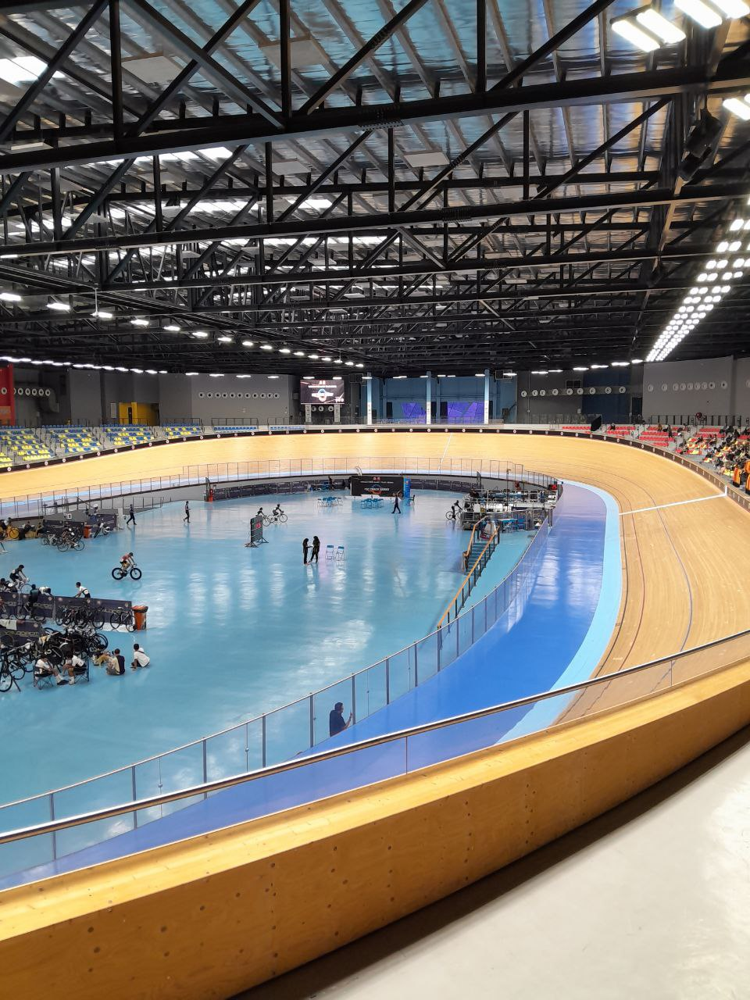

👜Internship Experience

During my internship in JLMWT, I had the incredible opportunity to visit the One Fathom Bank Lighthouse, Malaysia's only lighthouse located at sea.
The iconic building is in the Malacca Strait, an important and busy nautical route. The lighthouse itself is amazing in size, with its light beam visible for up to
42 nautical miles (approximately 30 kilometers from Klang).
The location is somewhat exclusive, and not everyone can access the lighthouse, making this experience truly unique and unforgettable for me.
Learn More
📽️Sepatuh Reunion Live

I got the opportunity to attend Sepatuh Reunion live in Shah Alam with my family.
By watching it live, I understand how people who work behind the scenes contribute to the show's success. It was a nice experience.
I met Jep Sepatuh, Rahim, and others.
View about BTS
🚴Velodram Nasional Malaysia

I also had the opportunity to visit the Malaysian National Velodrome, a sporting facility in Nilai, Negeri Sembilan, Malaysia.
This is Southeast Asia's first indoor velodrome. The full address is Persiaran Perbandaran, 71800 Nilai, Negeri Sembilan.
I went there to meet my cousin, who was taking part in a bicycle race. And then I saw Azizulhasni Awang, a Malaysian cyclist.
Explore More


{kind=link}